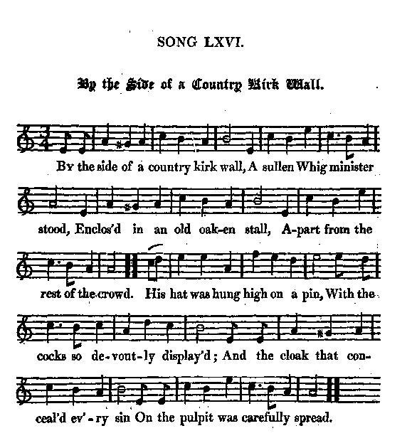

By the Side of a Country Kirk Wall
Près du mur de cette agreste église
Tune and lyrics by the Rev. John Skinner (1721 - 1807)
Tune - Mélodie"By the Side of a Country Kirk Wall"
from Hogg's "Jacobite Relics" 2nd Series N°66, page 191, 1821
Sequenced by Christian Souchon

|
To the tune: "It is from Moir's MS. and there said to have been written by the Rev. and ingenious John Skinner on Mr Forbes of Pitney Cadell, minister of Old Deer." Source: Hogg in "Jacobite Relics, 2nd series". |
A propos de la mélodie: "Ce chant est tiré du manuscrit de Moir et on attribue à l'ingénieux Révérend John Skinner cette satire du Révérend Forbes de Pitney-Cadell, pasteur d'Old Deer." Source: Hogg in "Jacobite Relics, 2nd series". |

|
BY THE SIDE OF A COUNTRY KIRK WALL 1. By the side of a country kirk wall, A sullen Whig minister stood, Enclos'd in an old oaken stall, A-part from the rest of the crowd. His hat was hung high on a pin, With the cocks so devoutly display'd And the cloak that conceal'd ev'ry sin On the pulpit was carefully spread. 2. In pews and in benches below The people were variously plac'd ; Some attentively gaz'd at the show, Some loll'd like blythe friends at a feast. With a volley of coughs and of sighs, A harsh noisy murmur was made, While Pitney threw up both his eyes, And thus he began to his trade : 3. " My dearly beloved," quoth he, " Our religion is now at a stand; " The Pretender's come over the sea " And his troops are disturbing our land. " The Papists will sing their old song, " And burn all our Bibles with fire, " And we shall be banish'd ere long ; " 'Tis all that the Tories desire. 4. " They'll tell you he's Protestant bred, " And he'll guard your religion and laws; " But, believe me, whate'er may be said, " He's a foe to the Whigs and their cause. " May thick darkness, as black as the night, " Surround each rebellious pate! " And confusion to all that will fight " In defence of that bastardly brat! 5. " Our kirks, which we've long time enjoy'd, " Will be fill'd with dull rogues in their gowns, " And our stipends will then be employ'd " On fellows that treat us like clowns. " Their bishops, their deans, and the rest " Of the pope's antichristian crew " Will be then of our livings posses t, " And they'll lord it o'er us and o'er you. 6. " Instead of a sleep in your pews, " You'll be vex'd with repeating the creed; " You'll be dunn'd and demur'd with their news, " If this their damn'd project succeed. " Their mass and their set forms of prayer " Will then in our pulpits take place: " We must kneel till our breeches are bare, " And stand at the glore and the grace. 7. " Let us rise like true Whigs in a band, " As our fathers have oft done before, " And slay all the Tories off hand, " And we shall be quiet once more. " But before he accomplish his hopes, " May the thunder and lightning come down; " And though Cope could not vanquish his troops, " May the clouds keep him back from the throne!" 8. Thus when he had ended his task, With the sigh of a heavenly tone, The precentor got up in his desk, And sounded his musical drone. Now the hat is ta'en down from the pin, And the cloak o'er the shoulders is cast; The people throng out with a din, The devil take him that is last! Source: "The Jacobite Relics of Scotland, being the Songs, Airs and Legends of the Adherents to the House of Stuart" collected by James Hogg, published in Edinburgh by William Blackwood in 1819. |
PRES DU MUR DE CETTE AGRESTE EGLISE 1. Près du mur de cette agreste église, Un pasteur Whig, se dressait Dans la chaire en bois qui divise Les ouailles et le curé; Son chapeau pendant à la patère, Bordures pieusement relevées; Et la cape où le péché se terre Sur le pupitre étalée. 2. Sur les bancs, les prie-Dieu, l'assemblée Etait éparse à ses pieds. Une partie semblait médusée Et l'autre se prélassait. Le voilà qui lance une toux brève: Un murmure emplit la réunion, Puis au ciel Pitney les yeux élève, Commençant ainsi son sermon: 3. "Chers frères, apprenez ce Dimanche Quel danger court notre foi: Le Prétendant a passé la Manche, Ses troupes sèment l'effroi. Les Papistes chantant leurs cantiques S'en vont jeter nos bibles au feu. Bientôt nous devrons prendre la fuite. C'est ce que le Tory veut. 4. "Il gardera la foi protestante Dont il est issu, dit-on; Mais malgré ce que l'on invente, Il cache son aversion. Puisse s'enfoncer dans les ténèbres La tête de chaque révolté. Puissent-ils, en le défendant, perdre. Ils l'auront bien mérité. 5. "Les temples où nous régnions en maîtres Seront pleins d'ensoutanés. Nos traitements vont disparaître Au profit de leurs abbés. Leurs évêques et toute la clique Du Pape-antéchrist et ses suppôts, Nous tondront la laine, c'est logique, A vous et nous sur le dos. 6. "Vous qui dormiez sur les bancs d'église, Rabâcherez le Credo! Vous serez noyés sous les bêtises Qu'affectionnent nos rivaux: Leur messe et toute leur liturgie, Conduisent à d'étranges ébats: A genoux jusqu'à trouer nos braies; Debout pour le gloria. 7. "Que les Whigs forment leurs compagnies, A l'exemple des anciens! Sans remord trucidez les Tories Votre repos le vaut bien! Avant que triomphent leurs cortèges, Puissent tonnerre, éclair se liguer! Où Cope échoua, puisse la neige Du trône les éloigner!" 8. Quand le prêtre eut conclu son chapitre Par un soupir bien senti, Le chantre s'assit au pupitre: L'orgue grondait à grand bruit. Quand le chapeau quitta la patère, Tous vers la sortie se sont rués. Malheur aux pauvres retardataires: Le diable a pris le dernier! (Trad. Christian Souchon (c) 2010) |
|
"This is a satire on the Rev. Mr Forbes of Pitney-Cadell, minister of Old Deer. It at the same time serves to illustrate in some degree the share which the clergy took in the politics of that period, as does also the following anecdote: after the battle of Prestonpans, and while Prince Charles was residing at Holyrood-House, some of the Presbyterian clergy continued to preach in the churches of that city, and publicly prayed for King George, without suffering the least punishment or molestation. One minister in particular, of the name of McVicar, being solicited by some Highlanders to pray for their prince, promised to comply with their request, and performed his promise in words to this effect: "And as for the young prince, who has come hither in quest of an earthly crown, grant, O Lord, that he may speedily receive a crown of glory." (see also the note to Tearlach Stiùbhard). Jacobite Minstrelsy, page 210, 1829 (Glasgow, printed for Richard Griffin and co) |
"Voici une satire du Révérend Forbes de Pitney-Cadell, pasteur d'Old Deer. Elle permet en même temps, d'illustrer, jusqu'à un certain point, le rôle joué par le clergé dans les affaires politiques de l'époque, tout comme l'anecdote suivante: après la bataille de Prestonpans, alors que le Prince résidait au château de Holyrood, plusieurs pasteurs presbytériens continuèrent de prêcher dans les églises d'Edimbourg et de prier publiquement pour le roi Georges, sans être aucunement inquiétés. L'un d'entre eux, en particulier, du nom de McVicar, fut sollicité par des Highlanders pour qu'il veuille prier pour le Prince. Il promit de le faire et s'acquitta de cette tâche en prononçant ces mots: "Pour ce qui est du jeune prince venu ici en quête d'une couronne terrestre, accorde lui, Seigneur, et rapidement, une couronne de gloire." (Cf. aussi la note du chant Tearlach Stiùbhard). Jacobite Minstrelsy, page 210, 1829 (Glasgow, chez Richard Griffin et Cie) |